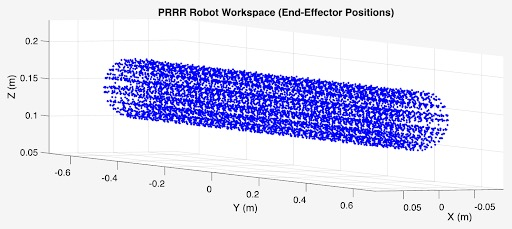
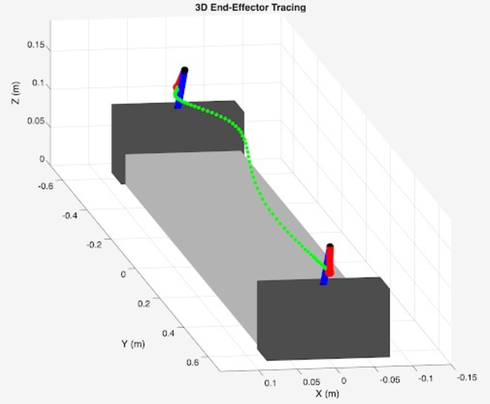
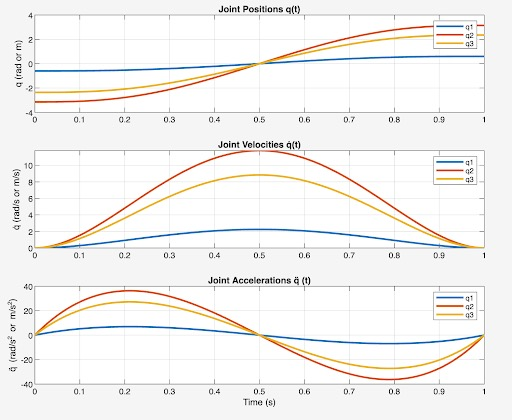

Surveillance Robot
Simulation • MATLAB • Trajectory Planning • Workspace Visualization • Forward/Inverse Kinematics


Autonomous Under-Vehicle Inspection Robot with PRRR Manipulator
Vehicle undercarriage inspection is typically performed using bulky equipment and manual operation, making the process slow, labor-intensive, and difficult to deploy in confined spaces. But how about a compact robotic inspection system capable of navigating and positioning sensors or tools for detailed inspection tasks?
A prismatic rail combined with three revolute joints enables the robot to translate along the vehicle’s length while orienting the end-effector camera to access hard-to-reach components underneath the chassis.
Using a modified Denavit–Hartenberg formulation, we derived the manipulator’s forward kinematics to model how joint motion translates into end-effector position and orientation. Closed-form inverse kinematics solutions were then developed to compute feasible joint.
Simulation
The robot workspace is generated by sweeping all joints over their full ranges without self-collision. The resulting set of reachable end-effector points forms a dense three-dimensional cloud. The structure of the cloud reveals an elongated,tube-like reachable region dominated by the translational motion of the prismatic axis, while the rotational joints primarily determine the radial distribution and thickness of the workspace volume.
When moving from point to point, the robot demonstrates a smooth transition of the end-effector between two boundary poses.


Corresponding joint trajectories exhibit the expected minimum-jerk structure, with position profiles that are continuous and monotonic, velocity profiles that rise and fall symmetrically, and accelerations that start and end at zero, ensuring dynamic feasibility and actuator-friendly motion.
